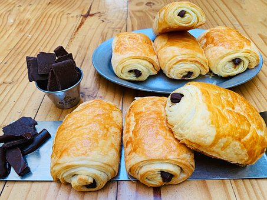
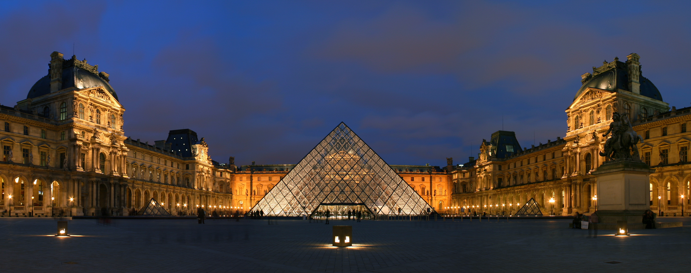

Food
Chocolate filled croissant:
This was one of my favorite thing to get when at Paris. I would always get this in the morning for breakfast or anytime I felt like I wanted a snack. Their is a lot of convenient bakeries in Paris that is in walking distance so you can walk there and get anything you feel like. Chocolate filled croissant is a must try sweet snack.
First Must Go Location
The Eiffel Tower
The Eiffel Tower is a historical site within Paris France. And is a must go spot to take pictures and to see in person. You can also go in and take an elevator to the top of the tower and look around. My recommendation is to go at night because the Paris city night light is a beautiful sight to see when at the top of the tower and the Eiffel Tower also lights up at night too. But do note that this location get pretty crowded.

Second Must Go Location
The Louvre
The Lourve was one of my favorite location within Paris. The Lourve is a famous and big museum in Paris, it holds many famous artworks, artifacts and history in the museum. It also display the famous Mona Lisa painting. Their is so many different exhibits and artworks displays that you would need more than two days to fully explore all of the content in this museum. This is a must go place.
